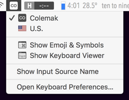

A carefully-designed, alternative, programming-oriented number-row, for those of us who use the symbols far more often than the numbers.
NOTE: These (with the exception of the ‘lite’, unshifting-only mode) have no effect unless ‘Colemak’ is selected in macOS's input-method configuration. This intentionally gives you a quick escape-hatch when others use your laptop — enable ‘input source in menu bar’, and then just click it and select your original layout if someone else is going to be using your computer!
This is my (@ELLIOTTCABLE’s) keyboard-layout project. I'd like to give this layout an actual homepage, once it stabilizes, with more info; but here's a summary for now:
The current revision of this layout doesn't attempt that last one — each symbol is moved precisely alongside its corresponding number. (This is already an excellent improvement, in my experience — ! and @ being on the index fingers is absolutely excellent for DuckDuckGo and Twitter! 😉 Not to mention that this approach is very keycap-compatible, for those of us with external, mechanical keyboards.)
(There's also a second, ‘lite’ mode that only unshifts the symbol-row. This is useful if you can programmatically or physically remap the layout of keys your physical keyboard, but cannot programmatically swap the shift-modifier behaviour. This version is not restricted to the OS-level Colemak mapping, because it's assumed you can remap your alphas in the same fashion as you remapped your number-row, and are thus not using the OS-level remapping.)
I suggest using this alongside these other modifications:
Caps Lock to Escape on single press, Control on press and hold.Notes: